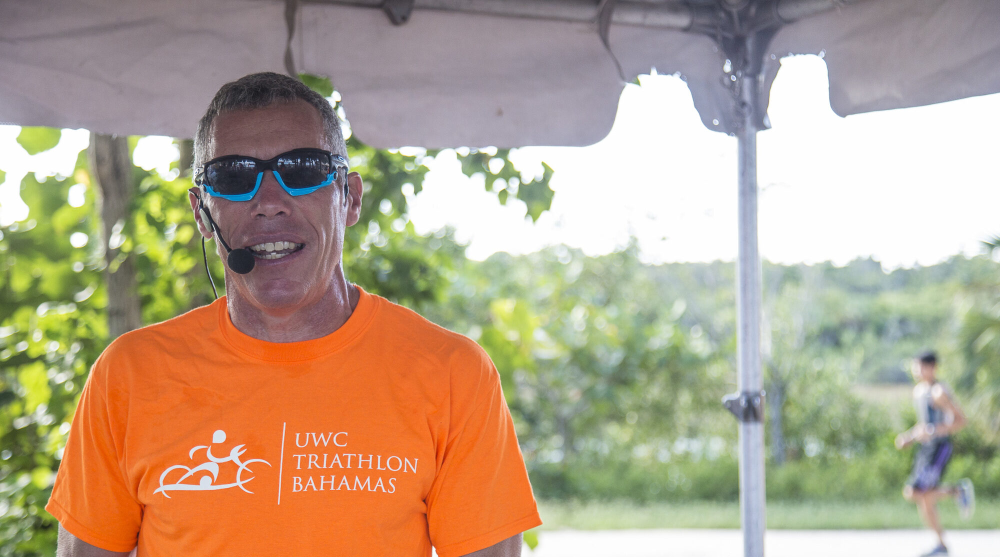

Toronto Waterfront Marathon
Since 1998 “the voice of the Toronto Waterfront Marathon,” one of Canada’s only IAAF Gold Label marathon events.

Informed, energetic announcing that connects athletes, spectators and sponsors—from a first start line to the world stage.
More than commentary
Our team combines an athlete’s instincts with decades of journalism, production and live-event experience.
We know when a crowd needs context, when an athlete deserves the spotlight and when the finish line simply needs room to breathe. Every assignment is matched with voices that understand the sport, the audience and the shape of the day.
On the mic
The right voice can settle a start line, explain the race unfolding, lift a crowd and make the final finisher feel like the only athlete in the world.
Selected experience
Mackatak announcers bring experience from events across Canada, throughout North America and internationally.
Since 1998 “the voice of the Toronto Waterfront Marathon,” one of Canada’s only IAAF Gold Label marathon events.
Race walking, open-water swimming, triathlon and marathon announcing.
International race experience including Lanzarote and Canada.
Positive, athlete-first energy for young racers and their families.
Clear, informed commentary for participants and spectators.
Deep sport knowledge delivered with warmth and momentum.
Additional experience includes Around the Bay, Run Barbados, Meagan’s Walk, the Toronto Pan American Cup and the UWC Bahamas Triathlon.
“Kevin was an absolute delight to work with! He announced for all of our races and he truly helped set the positive, fun, upbeat tone of our events—he helped make every race a memorable and enjoyable experience for both our participants and our spectators.
We greatly appreciate Kevin’s professionalism, expert knowledge of triathlon, and amazing personality and we can’t wait to work with him again!”
Bookings & availability
Tell the Mackatak team about your event, audience, location and date.
Connect